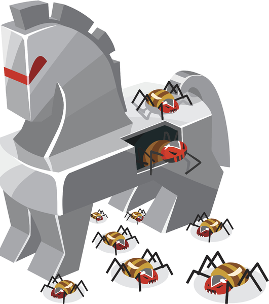
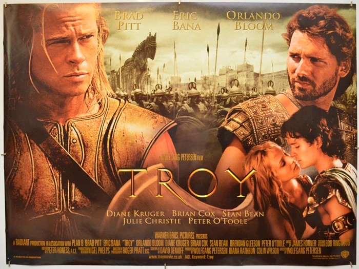

Trojan Horse
You have your sword, I have my tricks
-- by troy

Hey everyone, in today’s blog We will see what Trojan Horse aka Trojan Virus is and How was it originated? Who don’t remember legendary movie Troy!!

The genius warrior Archilles & his fights. In that movie, when the Greeks raised war against Kingdom of Troy, there was time when the Greeks were about to defeat and then they came up with a brilliant plan.
Attack
The plan was to make a “Trojan horse“, huge hollow wooden horse constructed by Epeius, a master carpenter and pugilist from the Greeks kingdom. Its sole purpose was to gain entrance into Troy during the Trojan War
Here You can see in the Picture, huge Horse like structure made of wood. It was left at the coastal area of Troy Kingdom, where the Greeks had made their camps. It was left up as the symbol of gratitude. Have look at the clip 🙂 The Troy happily take the Horse with them to their city as above picture. At the mid night, soldiers from inside the horse comes out and open up the gates of Troy for Greeks army to come in and it the war was ended and won by the Greeks.
Learnings
In today’s world we think we might not fall for such foolish hack, but we are wrong. Many attack’s we see today are some how based on such Trojan attacks.
What if I give you a CD/USB saying it contain some best songs collection of your favorite singer or your favorite movie/web-series or such, it’s more probable that you will take it happily, the CD/USB also has legit movies/Web-series what you are said it has, so their is no any room for doubt. But along with those all, the CD/USB also has small Trojan which is sufficient to mess up your PC and compromise your life. Have a look at this Clip from Mr.Robot how Trojan can be possible.
So it is very important to make sure to check properly before inserting any USB, CD etc in your PC. Their had been many attack due to Trojan virus which has placed several damage to Companies.
© hackkeencyber